Courses / 01
Courses by Bright
Courses shaped for education, training & learning services decisions.
Courses opens as a clear education decision hub: what Bright offers, who it helps, why it matters, and which route to take first.
The first screen combines positioning, proof, primary action, and fast internal navigation, so people can act immediately or compare the rest of the courses route with context.
Clear intakeHuman follow-upPractical reassurance
Black cinematic course hero
Filter the options
Select the closest route and Bright keeps the next step, proof, and follow-up expectation aligned with confidence and progress.
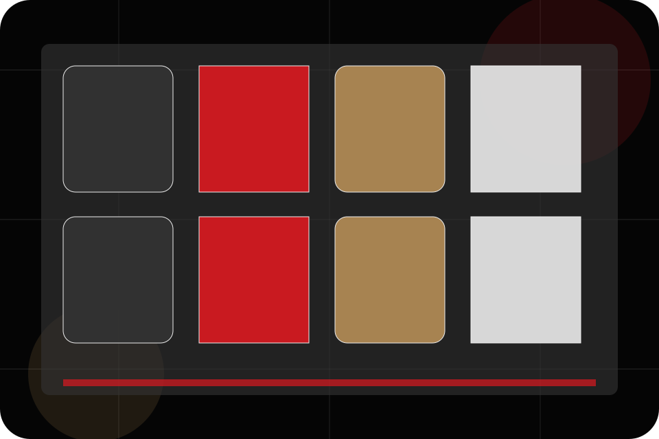
Courses / 02
Overview
Overview explains the practical scope, best-fit situations, and expected outcome so education visitors can compare options without decoding jargon.
The section keeps the offer concrete: what is included, who it is best for, what decision it supports, and which linked route gives the deeper detail.
Explore Courses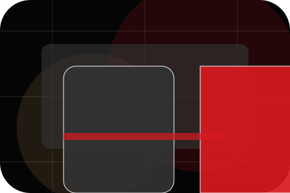
Best Fit
Who should use overview and when it belongs in the courses journey.
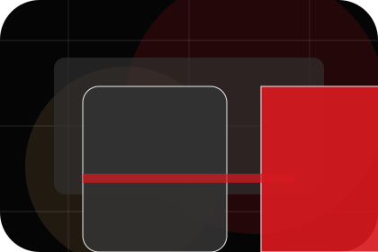
What Changes
The practical benefit visitors should expect after choosing this route.
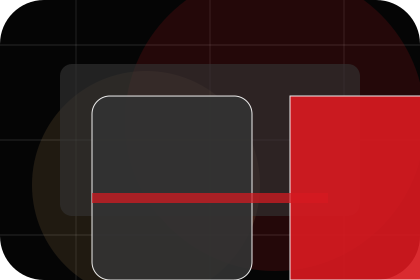
Deeper Route
Where to compare details, pricing, support, or contact options before committing.
Courses / 03
Levels
Levels explains the practical scope, best-fit situations, and expected outcome so education visitors can compare options without decoding jargon.
The section keeps the offer concrete: what is included, who it is best for, what decision it supports, and which linked route gives the deeper detail.
Explore CoursesBright structures levels around best fit, what changes, and a clear next route so visitors can compare the block quickly before they book a trial.
Book TrialCourses / 04
Subjects
Subjects explains the practical scope, best-fit situations, and expected outcome so education visitors can compare options without decoding jargon.
The section keeps the offer concrete: what is included, who it is best for, what decision it supports, and which linked route gives the deeper detail.
Explore CoursesBest Fit
Who should use subjects and when it belongs in the courses journey.
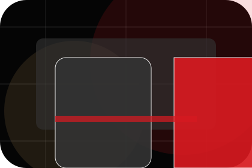
What Changes
The practical benefit visitors should expect after choosing this route.
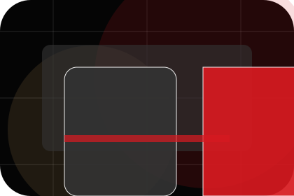
Deeper Route
Where to compare details, pricing, support, or contact options before committing.
Courses / 05
Formats
Formats explains the practical scope, best-fit situations, and expected outcome so education visitors can compare options without decoding jargon.
The section keeps the offer concrete: what is included, who it is best for, what decision it supports, and which linked route gives the deeper detail.
Explore CoursesBest Fit
Who should use formats and when it belongs in the courses journey.
Courses / 06
Outcomes
Outcomes explains the practical scope, best-fit situations, and expected outcome so education visitors can compare options without decoding jargon.
The section keeps the offer concrete: what is included, who it is best for, what decision it supports, and which linked route gives the deeper detail.
Explore CoursesBest Fit
Who should use outcomes and when it belongs in the courses journey.
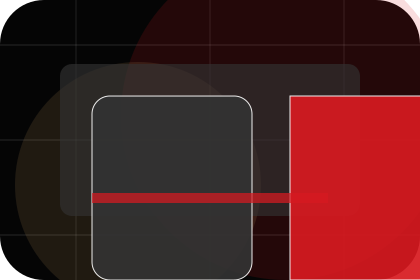
What Changes
The practical benefit visitors should expect after choosing this route.
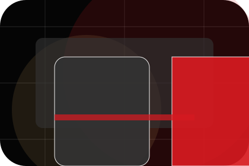
Deeper Route
Where to compare details, pricing, support, or contact options before committing.
Courses / 07
Schedule
Schedule explains the practical scope, best-fit situations, and expected outcome so education visitors can compare options without decoding jargon.
The section keeps the offer concrete: what is included, who it is best for, what decision it supports, and which linked route gives the deeper detail.
Explore Courses- 01
Best Fit
Who should use schedule and when it belongs in the courses journey.
- 02
What Changes
The practical benefit visitors should expect after choosing this route.
- 03
Deeper Route
Where to compare details, pricing, support, or contact options before committing.
Black cinematic course hero
Filter the options
Select the closest route and Bright keeps the next step, proof, and follow-up expectation aligned with confidence and progress.
Courses / 08
Materials
Materials explains the practical scope, best-fit situations, and expected outcome so education visitors can compare options without decoding jargon.
The section keeps the offer concrete: what is included, who it is best for, what decision it supports, and which linked route gives the deeper detail.
Explore CoursesBest Fit
Who should use materials and when it belongs in the courses journey.
What Changes
The practical benefit visitors should expect after choosing this route.
Deeper Route
Where to compare details, pricing, support, or contact options before committing.
Courses / 09
Fit
Fit explains the practical scope, best-fit situations, and expected outcome so education visitors can compare options without decoding jargon.
The section keeps the offer concrete: what is included, who it is best for, what decision it supports, and which linked route gives the deeper detail.
Explore Courses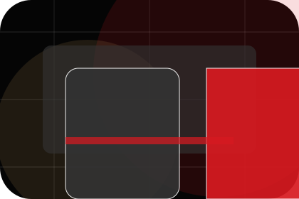
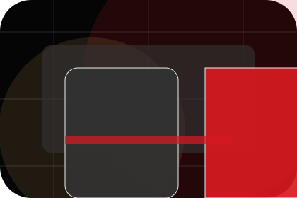
Best Fit
Who should use fit and when it belongs in the courses journey.
Courses / 10
Book Trial
Bright closes the courses route with a clear action, a quick reminder of the value, and a low-friction way to book a trial.
Visitors who are ready can use the primary action. Visitors who are still comparing can scan the section links, proof, and support routes before they book a trial.
Book TrialThe final block keeps the choice simple: act now, compare one more proof route, or send enough detail for a focused response.
Book Trialconfidence and progress
Book Trial
A course-led education site with cinematic hero, lesson shelves, premium teacher proof, and trial routes. Courses ends with a direct path to book a trial, plus enough context for visitors who still need to compare.
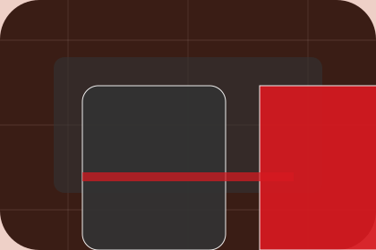
Book TrialNotes
Information is provided for planning and should be reviewed for the final client, location, and operating rules.